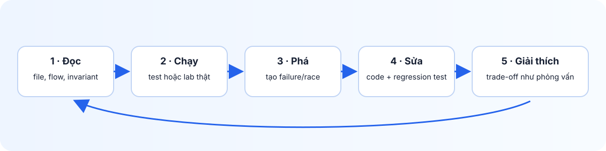
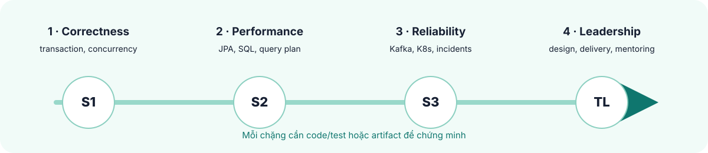

Senior Java Backend → Tech Lead
Flash Sale Platform Learning Portal
Học bằng cách đọc code, chạy lab, tạo failure, sửa bằng test và giải thích trade-off như khi làm việc thật.

Đọc đúng
Lần theo một request, invariant và file code liên quan trước khi mở rộng phạm vi.
Chạy thật
Dùng test, Docker, PostgreSQL hoặc Kind để quan sát behavior thay vì đoán.
Giải thích
Ghi evidence và trade-off như khi review production hoặc trả lời phỏng vấn.

Bắt đầu học
Mở giáo trình lõi nếu bạn mới bắt đầu; mỗi chương có nỗi đau, code, lab, failure và câu trả lời phỏng vấn.
Mở giáo trình vận hành và Tech Lead sau khi hoàn thành bảy bài lõi.
Làm Scenario Workbook để kiểm tra bạn có xử lý được tình huống senior hay mới chỉ nhớ khái niệm.
Mở learning map để đi theo thứ tự 12 bài nền tảng.
Mở mentor practice track để biết file cần đọc, bài phải tự code và evidence cần gửi.
Playbooks thực hành
Xem danh sách playbooks và labs. Mỗi playbook tập trung vào một vấn đề production cụ thể.
Mở Senior Practical Track để học theo nỗi đau production, từ IntelliJ đến concurrency, Redis và microservices.
Project
GitHub repository · React demo source
Website này là tài liệu tĩnh. Backend, PostgreSQL, Kafka, Docker và Kubernetes vẫn chạy local theo README của repository.